من الضروري والإجباري أن تكون فـ الواجهة الخارجية ديال الحافلات المخصصة للنقل الجماعي للأشخاص، بعض المعلومات مكتوبة بشكل واضح، وهي:
- اسم مقاولة النقل (الشركة اللي كتشغل الحافلة) - الصنف ديال الحافلة - الدرجة (مثلاً: عادية، ممتازة...)
هاد الشي كيساعد:
الركاب يعرفو نوع الحافلة والخدمة
السلطات تراقب وتنظم القطاع
يضمن الشفافية والوضوح فالنقل العمومي
السؤال 2
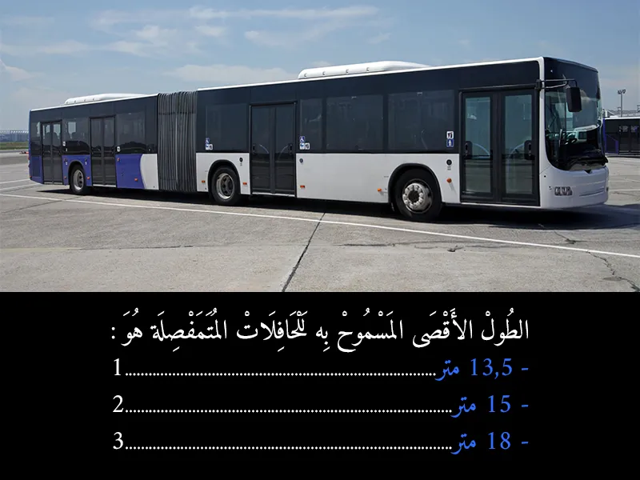
الجواب الصحيح: 3
الحافلات العادية (غير المفصلية): الطول الأقصى المسموح به لها هو عادة 12 متراً.
الحافلات المفصلية (المتفصلة): نظراً لطبيعة تصميمها الذي يسمح لها بحمل عدد أكبر من الركاب، يتم السماح لها بطول أكبر. الطول الأقصى المسموح به للحافلات المفصلية في المغرب (وكثير من الدول) هو 18 متراً. 📏🚌
السؤال 3
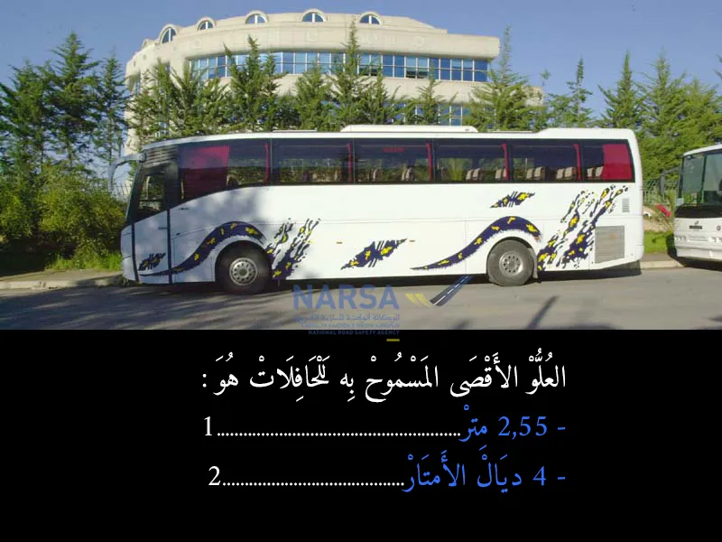
الجواب الصحيح: 2
العُلو الأقصى اللي مسموح به لأي حافلة كتمشي فالطريق، هو 4 أمتار من الأرض حتى الأعلى ديال الحافلة.
هاد الحد كيكون مهم باش:
ما تصدمش الحافلات بالمنشآت الفوقانية (بحال القناطر أو الأسلاك)
يضمن السلامة ديال الركاب والمارة
يتوافق مع البنية التحتية للطرقات
الفرع الثاني
الأبعاد القصوى للمركبات
المادة 5
يجب ألا تتجاوز أبعاد المركبات المنصوص عليها في 3 من المادة 47 من القانون المشار إليه أعلاه رقم 52.05 الحدود التالية:
الطول الأقصى: – المركبة بمحرك : 12.00 مترا؛
غير أن طول الحافلة والحافلة الكبيرة ذات محورين يمكن أن يصل إلى 13.5 مترا، وطول الحافلة والحافلة الكبيرة ذات أكثر من محورين 15 مترا.
– مقطورة: 12 مترا؛
– مركبة متمفصلة : 16.50 مترا؛
– قطار طرقي : 18.75 مترا؛
– حافلة متمفصلة : 18.00 مترا؛
العرض الأقصى: – جميع المركبات: 2.55 مترا؛
– البنيات الفوقية للمركبات المكيفة : 2.60 مترا؛
– العلو الأقصى: جميع المركبات: 4.00 أمتار.
السؤال 4
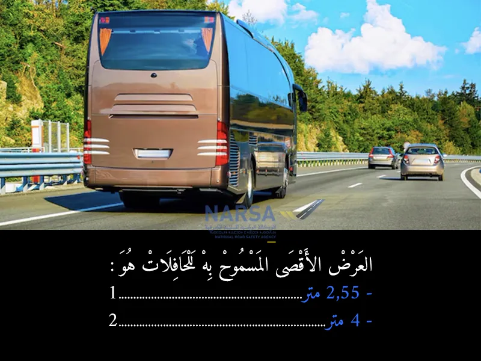
الجواب الصحيح: 1
العرض الأقصى المسموح به للحافلات في المغرب هو 2.55 متر، وهذا يتماشى مع المعايير الدولية للسلامة الطرقية والبنية التحتية. 📏🚌
السؤال 5
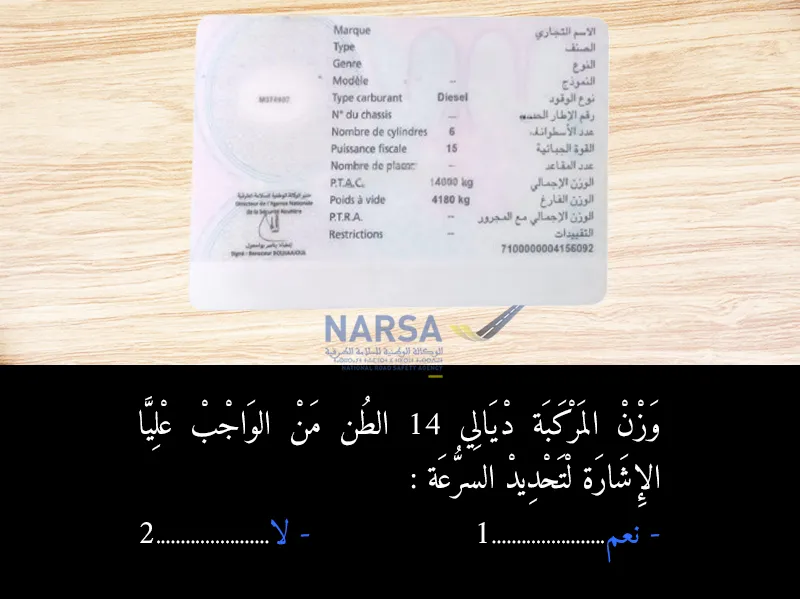
الجواب الصحيح: 1
نعم، بما أن وزن المركبة الإجمالي (مع الحمولة) 14 طناً، فمن الواجب وضع ملصقات تحديد السرعة على مؤخرتها، وهذا يعتبر شرطاً إلزامياً بموجب مدونة السير المغربية.
السؤال 6
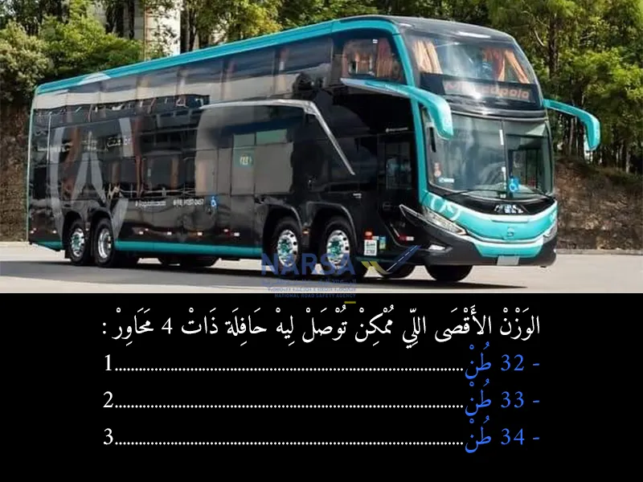
الجواب الصحيح: 1
الحافلة اللي عندها 4 محاور (يعني فيها 4 محاور ديال العجلات: جوج قدام وجوج اللور مثلا)، تقدر توصل للوزن الإجمالي الأقصى المسموح به 34 طن، وهذا هو الحد القانوني اللي ماخاصهاش تفوته.
هاد الوزن كيتحسب فيه:
وزن الحافلة بوحدها (الهيكل، المحرك...)
وزن الركاب والحمولة
وزن الوقود والأمتعة
المرجع القانوني: تتناول المادة 3 من القانون حدود الوزن الإجمالي المأذون به للمركبات المحملة والجرارات، حيث تحدد أوزانًا معينة تعتمد على عدد المحاور لكل مركبة وتكوينها. يُسمح لمقطورات ذات محورين بوزن يصل إلى 18 طناً، فيما يمكن لمركبات ذات ثلاثة محاور التقدم حتى 24 طناً. بالنسبة لمجموعات المركبات، يُحدد الوزن بـ 40 طناً لعدة تكوينات، بينما تُسمح عمليات النقل المتعدد الأنماط بحاويات بوزن 44 طناً. تشمل التوجيهات أيضاً أوزان محددة للمركبات بمحرك حسب عدد محاورها، حيث يُسمح بحد أقصى 32 طناً للمركبات ذات أربعة محاور.
السؤال 7
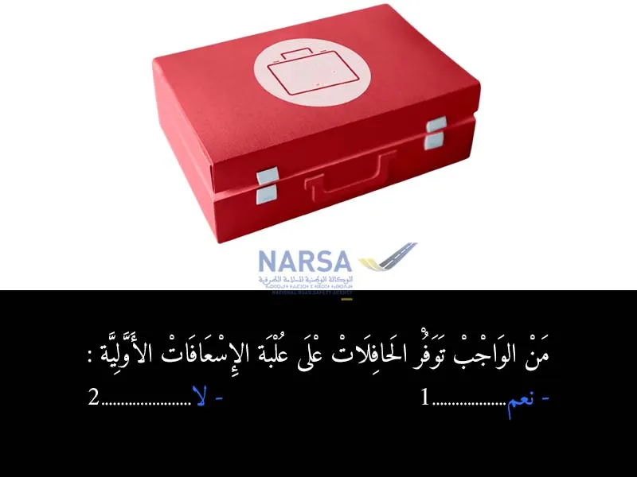
الجواب الصحيح: 1
من الواجب القانوني على الحافلات، خصوصاً اللي كتنقل المسافرين، تكون مجهزة بـ:
علبة الإسعافات الأولية (Trousse de secours)
باش فـ حالة وقعت إصابة أو مرض مفاجئ لشي راكب، يكون عند السائق أو المسؤول وسيلة سريعة لتقديم المساعدة
السؤال 8
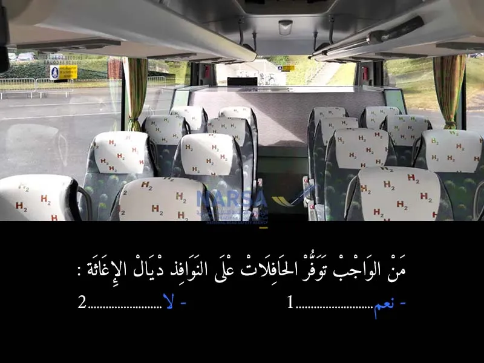
الجواب الصحيح: 1
الحافلات من الواجب يكون فيها نوافذ الإغاثة (fenêtres de secours) باش:
فـ حالة الطوارئ (بحال انقلاب الحافلة، الحريق، أو عرقلة الأبواب)، الركاب يقدرو يخرجو بطريقة سريعة وآمنة.
هي نوافذ كيكونو مُصممين باش ينكسرو بسهولة أو يتحيدو بوسائل خاصة.
المرجع القانوني: هاد الأمر كيدخل فـ إطار تجهيزات السلامة الإجبارية فـ الحافلات، وكيتم التنصيص عليه فـ:
النصوص التنظيمية لمدونة السير
ودفتر التحملات اللي خاص بشركات النقل الجماعي للمسافرين
هاد الدفتر كيلزم كل حافلة بتوفير:
نوافذ الإغاثة
الأبواب الاحتياطية
مطفأة الحريق
علبة الإسعافات
وغيرهم من تجهيزات السلامة
السؤال 9
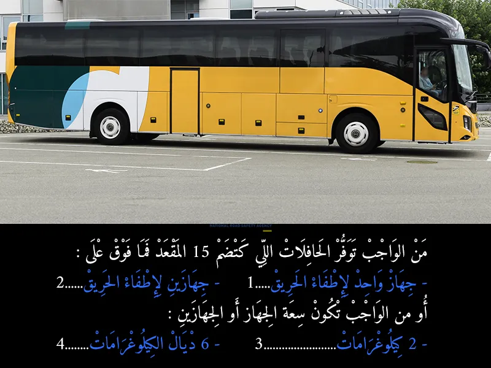
الجواب الصحيح: 2 و 3
وفقًا لمدونة السير المغربية، يجب على الحافلات التي تحتوي على 15 مقعدًا أو أكثر أن تكون مجهزة بجهازين لإطفاء الحريق. 🔧 كل جهاز يجب أن تكون سعته على الأقل 2 كيلوغرامًا من مادة الإطفاء.
🔒 السبب: وجود جهاز واحد فقط قد لا يكون كافيًا في حالة حدوث حريق، خصوصًا أن الحافلات تنقل عددًا كبيرًا من الركاب. وبالتالي، وجود جهازين يزيد من فرص التدخل السريع والفعّال لحماية الركاب وتفادي الكارثة.
📌 هذا الإجراء يدخل في إطار شروط السلامة الضرورية التي تفرضها مدونة السير لضمان أمن السائق والركاب على الطريق
السؤال 10
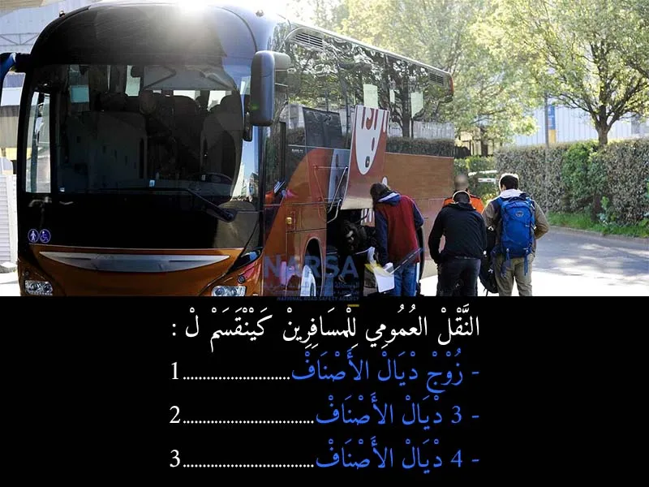
الجواب الصحيح: 3
حسب الفصل 1 من المرسوم رقم 2.63.363، النقل العمومي للمسافرين فالمغرب كيتقسم إلى أربعة أصناف مختلفة، وكل صنف عندو الخدمة ديالو الخاصة:
الصنف الأول: كيهم الحافلات السريعة لي كتخدم بمواقيت مضبوطة وممكن تكون بطابقين، وكتوقف غير فالنقط المحددة فجدول التوقف.
الصنف الثاني: ناقلات تقدر تمشي بوقت محدد أو بدون، وتقدر تنقل شوية ديال البضائع، ولكن بشروط (ما تفوتش 2 طن).
الصنف الثالث: حافلات كتخدم الأسواق وتنقل الناس والبضائع، ولكن حتى هي عندها شروط فالحمولة.
الصنف الرابع: كيهم النقل العرضي (بحال كراء حافلات للرحلات مثلاً)، خاصين ويخضعو لقوانين وتنظيم خاص
السؤال 11
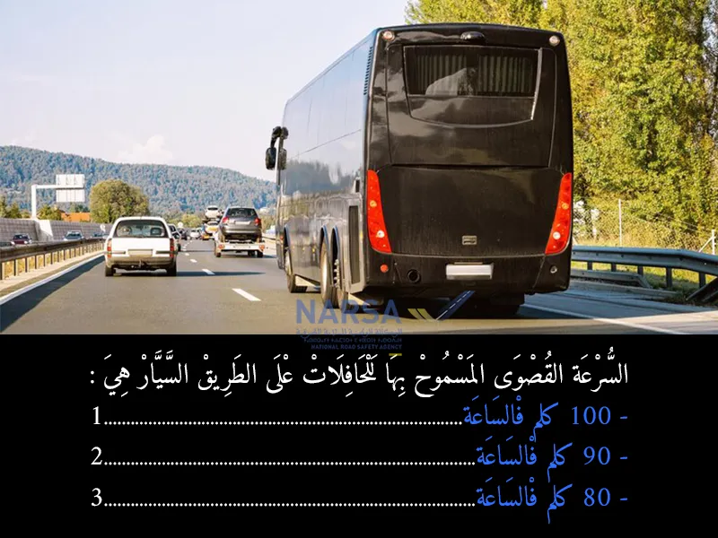
الجواب الصحيح: 1
عندما تسير الحافلات على الطريق السيار، فإن القانون المغربي يُلزم السائقين بعدم تجاوز سرعة 100 كيلومتر في الساعة. هذا الحد الأقصى من السرعة ليس عشوائيًا، بل تم تحديده بناءً على عوامل السلامة، مثل:
حجم الحافلة الكبير.
عدد الركاب.
صعوبة التوقف المفاجئ.
تقليل خطر وقوع الحوادث.
السؤال 12
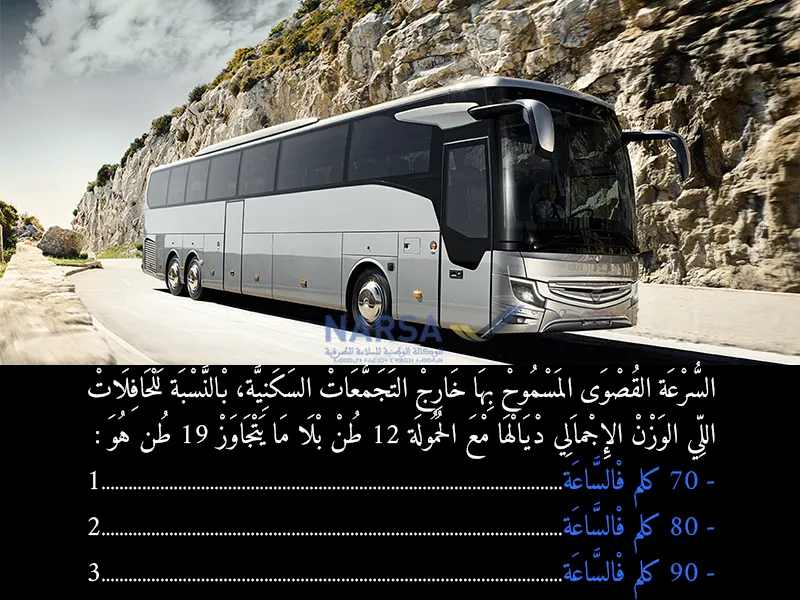
الجواب الصحيح: 2
فـ المدونة ديال السير، كاينين سرعات قصوى محددة حسب نوع العربة والوزن ديالها، خصوصاً خارج التجمعات السكنية.
بالنسبة لـ الحافلات اللي:
الوزن الإجمالي مع الحمولة ديالها أكثر من 12 طن
ولكن ما كيتجاوزش 19 طن
السرعة القصوى لي مسموح لها تمشي بها هي: 80 كيلومتر فالساعة.
السؤال 13
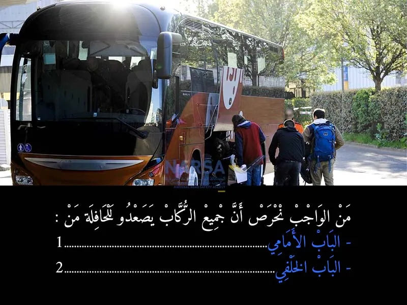
الجواب الصحيح: 1
ن الواجب القانوني والعملي كذلك، أن الركاب يركبوا من الباب الأمامي ديال الحافلة، علاش؟
باش يكون السائق كيشوف كل راكب كايطلع، ويتأكد واش معاه التذكرة أو مستعد يخلص.
كيساهم فالنظام، وكيمنع الازدحام أو الفوضى اللي تقدر توقع فباب الخلفي.
فـ الحافلات العمومية، غالباً الباب الأمامي هو اللي كيتستعمل للدخول، والباب الخلفي كيتستعمل للنزول فقط.
إذن، من الضروري الركوب من الباب الأمامي لضمان النظام والسلامة
السؤال 14
الجواب الصحيح: 1
من الواجب على السائق يتأكد قبل ما ينطلق أن جميع أبواب الحافلة مسدودين مزيان، وها علاش:
باش ما يطيح حتى راكب أثناء الحركة.
باش نضمنو السلامة ديال الركاب، خصوصاً الأطفال أو كبار السن.
تجنباً لأي حادث يوقع من باب محلول بلا ما يحس بيه السائق.
هاد الإجراء كيدخل فـ واجبات السلامة اللي خاص السائق يلتزم بها قبل التحرك
السؤال 15
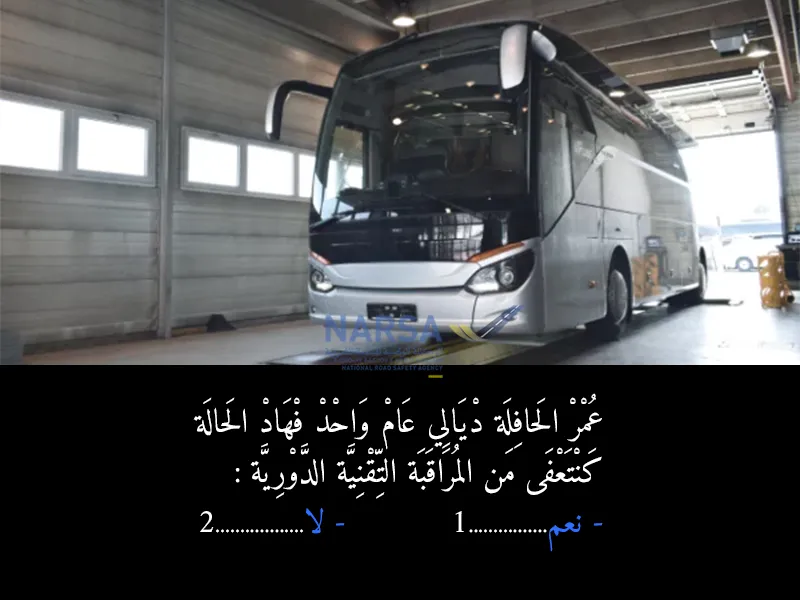
الجواب الصحيح: 2
حتى لو كان عمر الحافلة عام واحد، فهي ما كتُعفاش من المراقبة التقنية. ✍ حسب مدونة السير المغربية، الحافلات المخصصة للنقل العمومي للأشخاص كتخضع للمراقبة التقنية كل 6 أشهر من بداية الاستعمال، كيفما كان عمرها. 📘 (مرسوم رقم 2.10.421 المتعلق بالمراقبة التقنية للمركبات - المادة 3)
السؤال 16
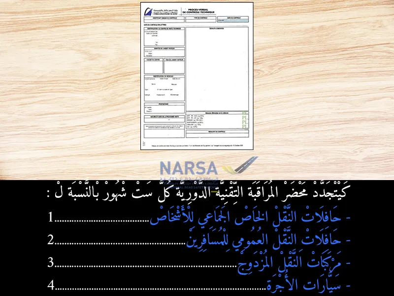
الجواب الصحيح: 1 و 2
محضر المراقبة التقنية كيتجدد كل 6 أشهر بالنسبة لـ: حافلات النقل الخاص الجماعي للأشخاص (بحال الشركات أو المؤسسات اللي كتستعمل الحافلات لنقل المستخدمين). حافلات النقل العمومي للمسافرين (بحال CTM أو النقل الحضري).
✍ حسب المادة 3 من مرسوم رقم 2.10.421 المتعلق بالمراقبة التقنية للمركبات، هاد الأصناف خاصها مراقبة تقنية كل ستة أشهر من بداية الاستغلال، حفاظاً على السلامة. --- 🚕 سيارات الأجرة و🚐 مركبات النقل المزدوج عندها بشكل دوري سنوي، إلا فحالات معينة.
السؤال 17
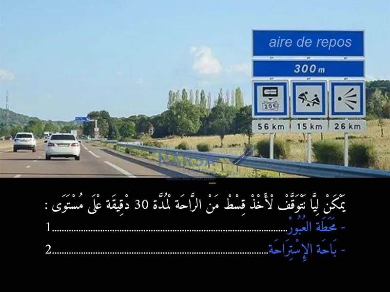
الجواب الصحيح: 2
باحة الاستراحة هي المكان المخصص والآمن للتوقف والراحة فالأوطوروت، فيها كل الظروف المناسبة (السلامة، الخدمات، الراحة). أما محطة العبور فهي مخصصة للدخول أو الخروج من الطريق السيار، وماشي مخصصة للتوقف أو الراحة، والتوقف فيها كيشكل خطر على حركة السير
السؤال 18
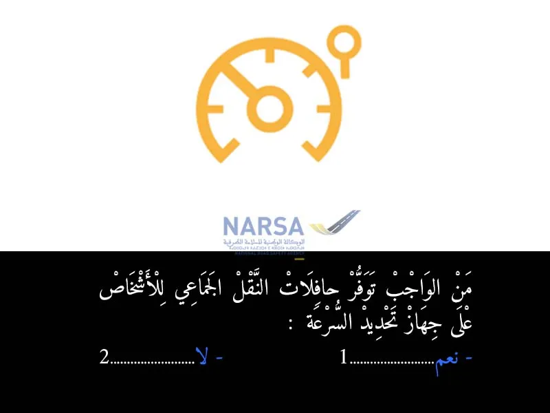
الجواب الصحيح: 1
جهاز تحديد السرعة هو واحد الجهاز إلكتروني كيتركب فالحافلة، والدور ديالو هو يحد من السرعة القصوى اللي يمكن تسوق بيها الحافلة، مثلاً 90 كلم/ساعة، وما يخليش السائق يتجاوز هاد السرعة.
الدور ديال هاذ الجهاز كيتجلى فعدة نقاط:
✅ السلامة: كيساعد على تفادي الحوادث اللي ناتجة على السرعة الزائدة.
✅ التحكم فالسياقة: كيجعل السائق يركز أكثر على الطريق بدل ما يكون ديما كيضبط السرعة.
✅ تقليل استهلاك الوقود: لأن السياقة بسرعة مستقرة كتعاون على التوفير.
✅ احترام القانون: كيساعد الشركات والسائقين يبقاو ملتزمين بالسرعة القانونية بلا ما يحتاجو يراقبو راسهم باستمرار.
✅ سلامة الركاب: السرعة الثابتة كتكون مريحة وآمنة أكثر للناس اللي راكبين فالحافلة.
بالتالي، وجود هاذ الجهاز ضروري فالحافلات اللي كتخدم فالنقل الجماعي للأشخاص، خصوصاً اللي كيدوزو من طرق سريعة أو مسافات طويلة
السؤال 19
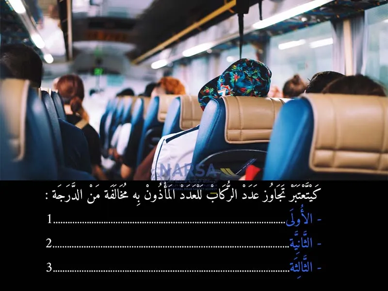
الجواب الصحيح: 1
تجاوز عدد الركاب المسموح به في الحافلات يُعتبر مخالفة من الدرجة الأولى في مدونة السير المغربية، وذلك لخطورتها الشديدة على السلامة الطرقية.
السؤال 20
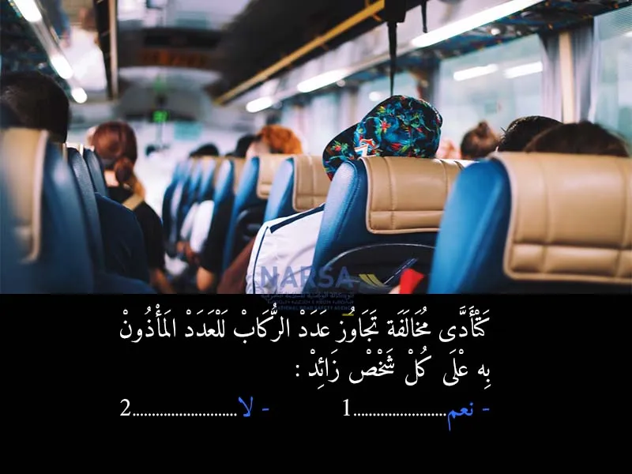
الجواب الصحيح: 1
نعم، مخالفة تجاوز عدد الركاب المأذون به تترتب عليها عقوبة (أو جزء من العقوبة/الغرامة) على كل شخص زائد عن السعة القانونية للحافلة.